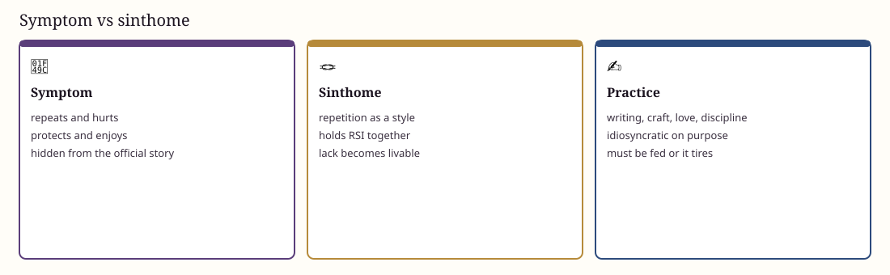

Fourth ring
Sinthome
Lacan respells symptôme as sinthome: not a coded message to delete, but a singular know-how that knots a life.
Joyce is the literary case. The charts translate that into ordinary clinic: a practice that holds RSI. A knot is a practice, not a trophy — if unfed it becomes a tired duty.
